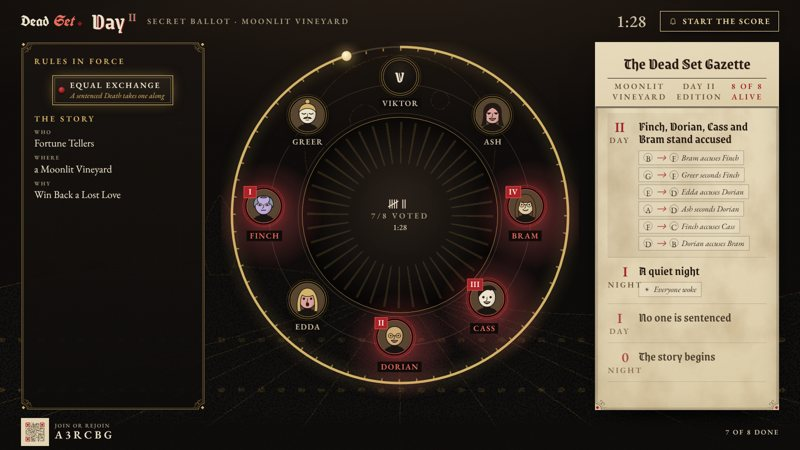
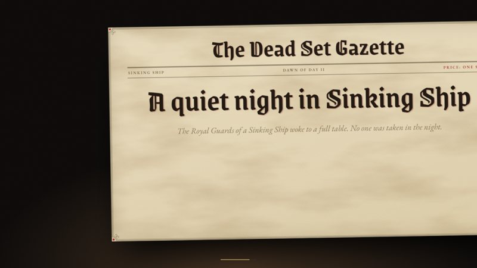
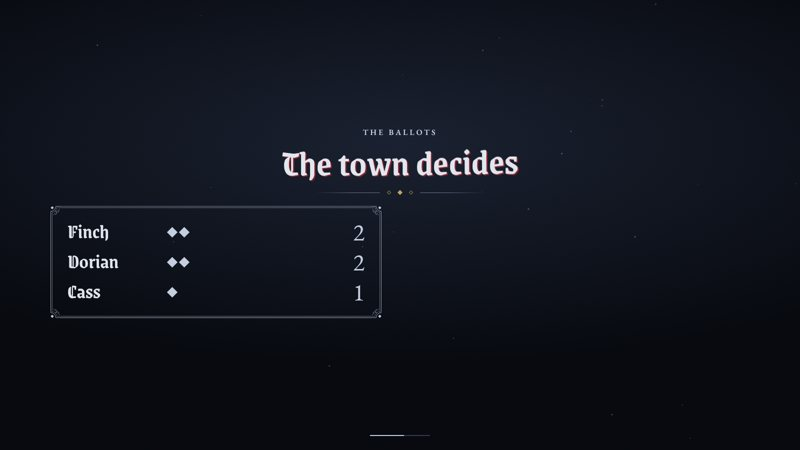
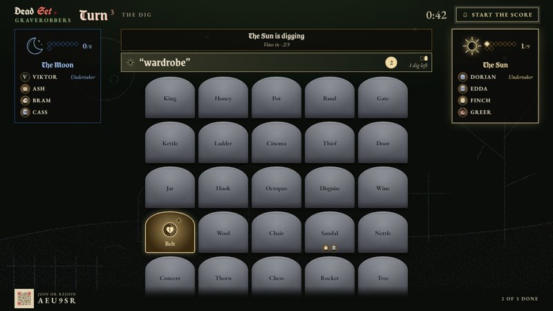
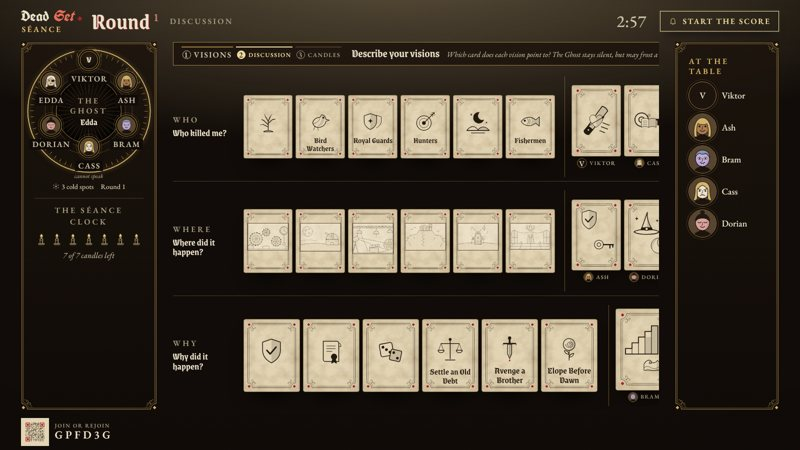
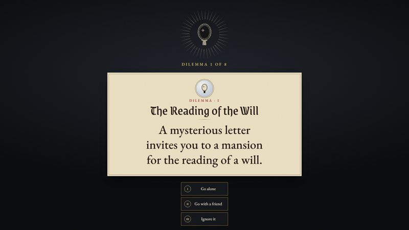
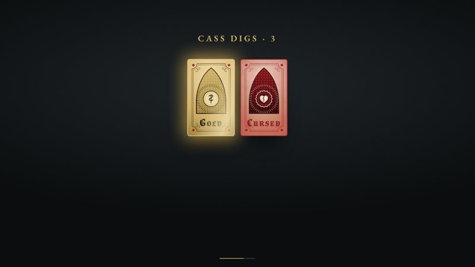
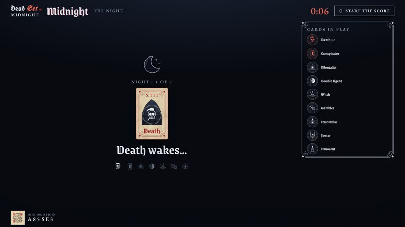
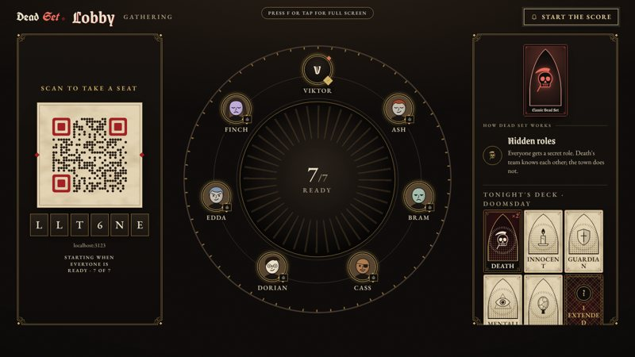

What the TV shows today
Latest branch (24 Nov), run locally with bots in all eleven modes, 4–20 seats, 1600×900. Much has improved since Part I: one grid, ornate panels, the wheel, the herald band. What remains is scale, emptiness and a few bugs.
Audit









Share of TV text under 20 px (measured at every phase). From a sofa 3 m away, 20 px on a 1600-wide layout is unreadable.
89%Séance
79%Midnight
79%Graverobbers
79%Mimic
73%Coffins
63%Classic
53%Mirror
50%Exorcism